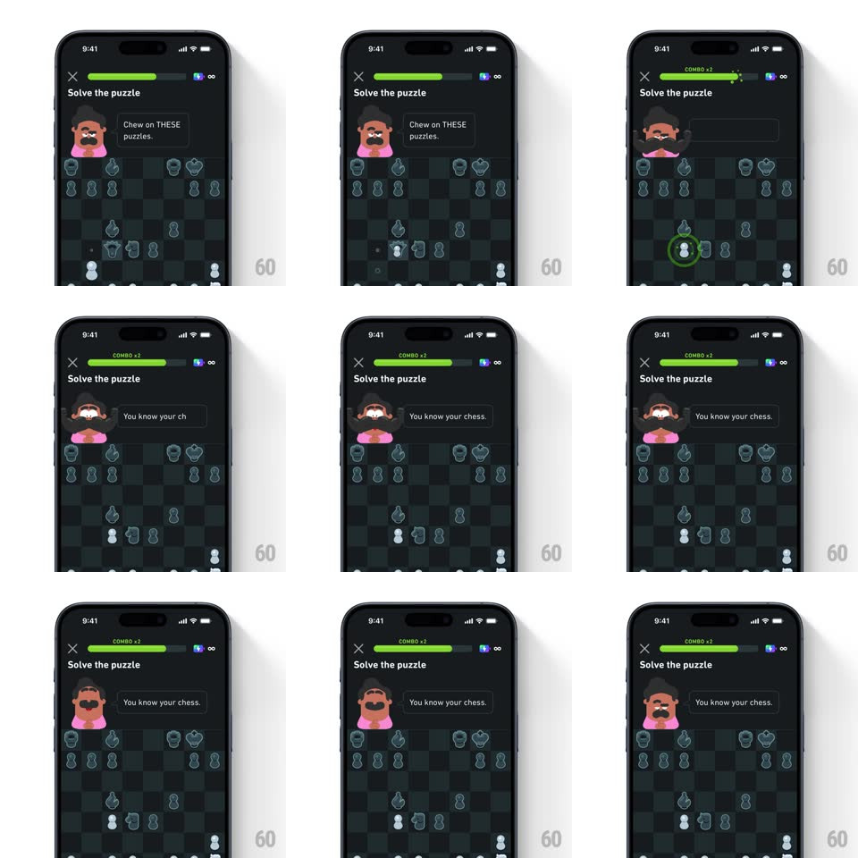

Media
Frame-by-frame

Rebuild this animation 1:1: Duolingo Chess' Oscar reaction - when you solve the puzzle, Oscar's mustache spring-expands into a proud bristle as he delivers "You know your chess."

Rebuild this animation 1:1: Duolingo Chess' Oscar reaction - when you solve the puzzle, Oscar's mustache spring-expands into a proud bristle as he delivers "You know your chess."
## Integration
Integration: stack-agnostic spec - springs given as stiffness/damping, timed motions as duration + curve; map every value to your framework and animation library of choice.
## Scene
Duolingo Chess puzzle screen, near-black: "Solve the puzzle" title, close X, the green progress bar with a "COMBO x2" tag, Oscar (mustached man in pink) top-left with his speech bubble ("Chew on THESE puzzles." before, "You know your chess." after), and the chess board below.
## Motion spec
Pattern: mustache spring-expand as the solve reaction.
- The puzzle plays normally: pieces slide (250ms ease-in-out) and the correct move rings its square (green pulse, 400ms).
- On the solve, Oscar's whole head does a small anticipatory dip (translateY +4px, 100ms), then his mustache spring-expands outward on both sides (scaleX 1 -> 1.5 with spring ~380/10 - a big, wobbly overshoot, settling over ~500ms) while his eyebrows lift and his mouth opens.
- The speech bubble crossfades to "You know your chess." as the mustache peaks (200ms).
- Simultaneously the progress bar's combo tag pops ("COMBO x2", scale 0.5 -> 1.2 -> 1, spring ~450/14) and the bar fills its segment with a green wipe (300ms).
- The mustache settles with a couple of visible wobbles (spring decay) and holds its slightly-larger proud shape until the next puzzle.
## Calibration
- The mustache is the only elastic element - Oscar's head and body stay near-still (the 100ms dip only).
- The reaction fires exactly on the correct move's landing, never early.
## Reduced motion
Mustache scales once (1 -> 1.2, 200ms) without wobble; speech crossfades.
## Don't miss
- The combo tag and the mustache fire on the same beat - they read as one celebration.
- The board stays fully still during the reaction - all eyes on Oscar.